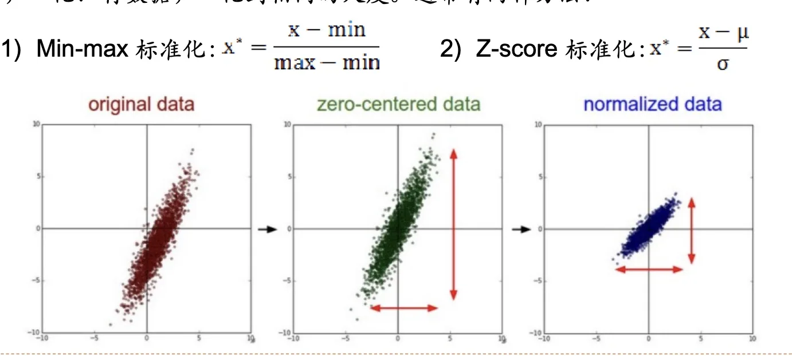
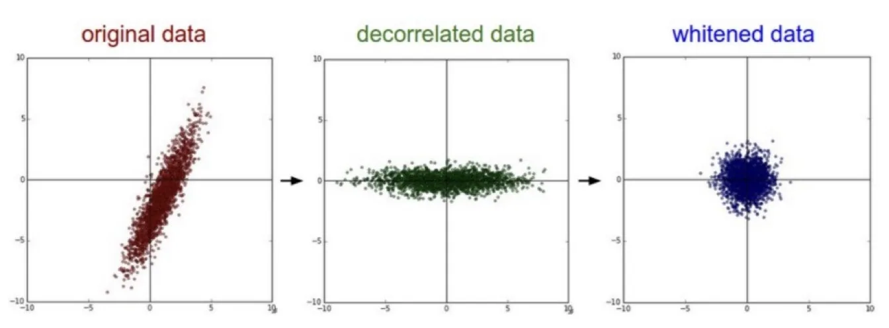
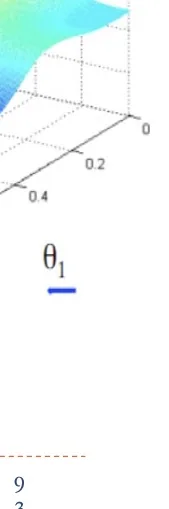
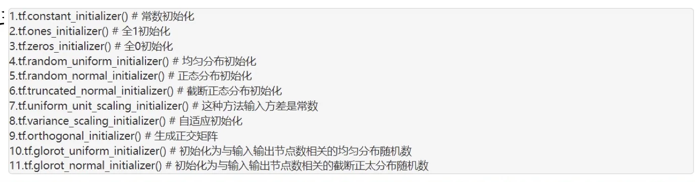
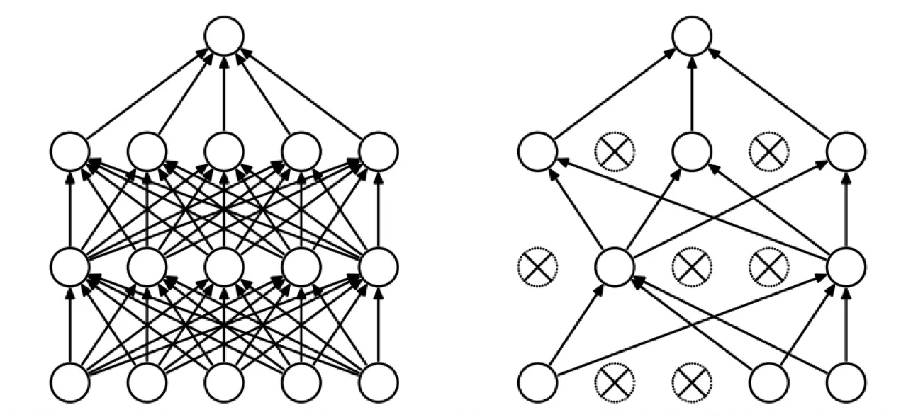
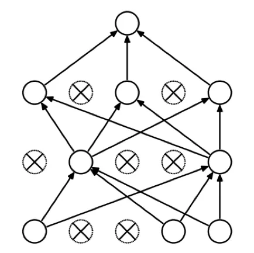
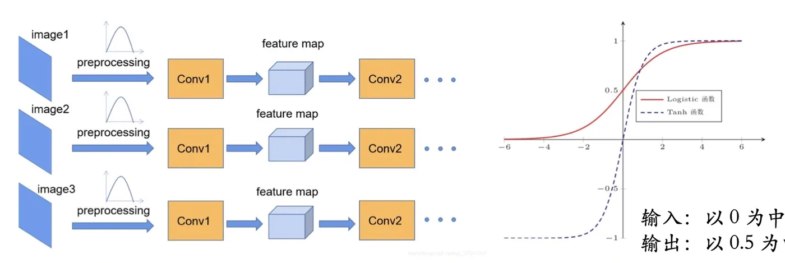
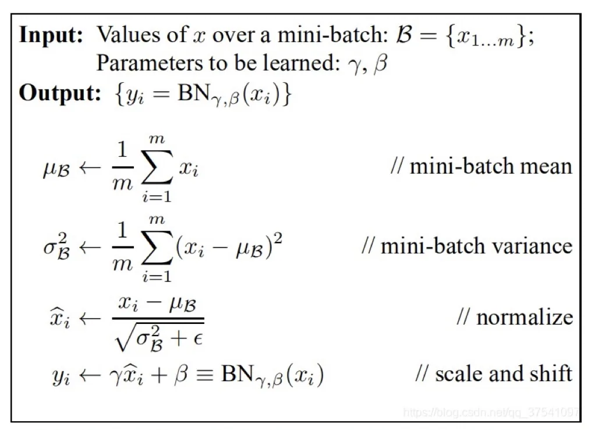
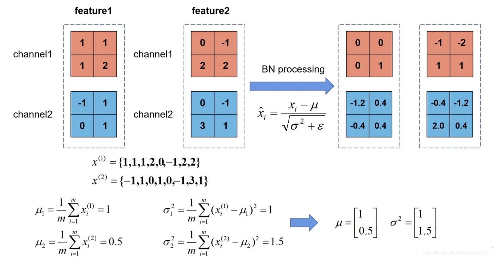

计算机视觉 · 第 6 章 卷积神经网络
6.5 网络训练注意事项
网络结构定下来只是开始，能不能训得动、训得好，取决于一批看似琐碎却决定成败的细节。这一节按训练流程把它们串一遍：先看喂给网络的数据该怎么处理（零均值化、归一化、PCA 白化、数据增广），再看参数从什么初值出发（权重初始化），最后看怎样给网络「上约束」以防过拟合（权重正则化、Dropout、批量归一化）。
1. 为什么训练前要先处理数据
神经网络的主要作用是通过数据训练出一个拟合函数，因此神经网络学习到的是训练数据的分布。这就带来一个直接后果：如果训练数据和测试数据的分布不同，那么就很难在测试数据上得到很好的效果。所以有必要先对数据进行预处理，把两者拉到同一个「尺度」和「位置」上。
课件给出了三种常用的数据预处理方法：零均值化、归一化、PCA 白化。
2. 零均值化与归一化
零均值化的做法很直白：把数据的每一维减去这一维的均值。做完之后，每一维的数据都以 0 为中心，不再有整体偏移。这一步的意义在后面的权重初始化与批量归一化里还会反复出现——输入偏向一侧会让某些权重长期只往一个方向更新。
归一化的目标是将数据归一化到相同的尺度，让不同维度的数据拥有可比的变化幅度。通常有两种方法：
- Min-max 标准化：把数据线性映射到 [0, 1] 区间，最大值变 1、最小值变 0；
- Z-score 标准化：把数据减去均值再除以标准差，得到均值 0、方差 1 的分布——它其实就是「零均值化 + 除以标准差」的组合。
两者的区别在于：Min-max 标准化对极值点非常敏感（一个离群点就会把整个区间压扁），Z-score 标准化则对所有样本一视同仁，更适合后面要讲的批量归一化那种场景。

3. PCA 与白化
第三种方法是 PCA 白化：将数据降维并去掉数据之间的相关联度，它的步骤是「首先对数据进行 PCA 处理，而后进行白化」。所以要分两步看。
（1）主成分分析（PCA）
PCA 主要用来把特征的主要成分找出来，并去掉基本无关的成分，从而达到降维的目的。它的标准步骤是：
- 零均值化：把原始数据集 X 的每一维减去该维均值；
- 计算协方差矩阵 C：协方差矩阵刻画各维之间的相关性，对角线元素是各维的方差，非对角线元素是两维之间的协方差；
- 求协方差矩阵的特征值与特征向量：特征值的大小代表对应方向上的数据方差（信息量）；
- 把特征向量按特征值从大到小排列，取前若干个方向作为新的坐标轴，就完成了降维。
第 4 步是 PCA 的精髓：方差大的方向保留，方差小的方向丢弃。课件用一个具体例子演示了这套计算——原始数据集 X 经过零均值化后求出协方差矩阵 C，再求出它的特征值与特征向量，并按特征值把特征向量从上到下排列。
（2）白化（Whitening）
白化就是把各个特征轴上的数据除以对应特征值，从而达到在每个特征轴上都归一化幅度的结果；也就是说，在 PCA 的基础上再除以每一个特征的特征值，以使其标准化。

这三张图正好对应三个状态，理解顺序是：原始数据是一团倾斜、扁长的点云——既相关，各维幅度也不一致；PCA 去相关之后点云被「转正」，坐标轴沿数据的主方向，但仍然是扁的（各维方差不同）；白化把每个方向再除以它的标准差，点云才被压成一个各向同性的球形。所以 PCA 管「方向」，白化管「幅度」。
需要提醒的是：PCA 白化属于比较「重」的预处理，它需要在整个训练集上做矩阵分解，而且丢掉小方差方向也意味着丢信息。因此在图像任务里更常用的其实是下一节的批量归一化。
4. 数据增广
数据增广是深度学习中的一种常见预处理，但它和前面三种不太一样：零均值化、归一化、PCA 白化都是在「改造已有数据」，而数据增广的目的是增加训练数据集，让数据集尽可能多样化，从而使训练出来的模型具有更强的泛化能力。它针对的正是过拟合——样本越多、越多样，模型就越难记住训练集的细节。
课件列出了常见的数据增广手段：
- Color Jittering：对颜色进行增强——图像亮度、饱和度、对比度变化，以及彩色变换；
- Random Scale：尺度变换，随机缩放；
- Random Crop：采用随机图像差值方式对图像进行裁剪、缩放，实现尺度与长宽比增强，也就是随机裁剪；
- Horizontal / Vertical Flip：水平、垂直翻转；
- Shift：平移变换；
- Rotation / Reflection：旋转、仿射变换；
- Noise：加入高斯噪声、模糊处理。
这份清单和 6.2 节讲池化时提到的三种不变性可以直接对照：翻转、平移、旋转、缩放这些操作之所以能当作「新样本」，前提正是模型对它们具有一定程度的不变性。数据增广相当于把这些不变性直接「喂」给网络，让它在训练阶段就见过这些变化。
5. 权重初始化
数据准备好之后，参数要从某个初值出发。权重初始化之所以重要，有三个层面的原因：
- 影响收敛速度：对收敛的算法适当地初始化能加快收敛速度；
- 影响收敛到哪里：初始值的选择将影响模型收敛到局部最小值还是全局最小值——课件用一幅示意图说明，初始值不同会收敛到不同的极值点；
- 影响泛化：初始值过大可能在前向传播或反向传播中产生梯度爆炸；如果太小，信号在层层传递中会不断衰减，导致梯度消失、学习停滞。

具体该取什么初值？课件给出了几种做法及其实践效果：
- 零值初始化：把权重初始化为 0，可能出现梯度消失，所以不常用。原因也很直观——所有权重相同意味着所有神经元的梯度也相同，网络永远学不出差异。
- 随机初始化：将随机数赋值给 w，通常倾向于使用很小的随机数，防止落在激活函数的平滑区域导致梯度下降变慢。
- 均匀分布、正态分布、正交分布初始化：同样都属于随机初始化，只不过随机数分别符合均匀分布、正态分布、正交分布。实践表明这三种初始化效果更好。

6. 正则化之一：权重正则化
训练过程中最需要提防的是过拟合，而正则化就是给模型加上约束、用来防止过拟合的手段。最基础的一种是在损失函数里加一个正则化项：
L(w) = (1/N) Σi=1N Li(xi, yi, w) + λR(W)
前一项是原来的经验损失，后一项就是正则化项，λ 控制它的强弱。课件列出了最常见的三个正则化函数：
| 名称 | 正则化项 R(W) | 特点 |
|---|---|---|
| L2 正则化 | R(W) = (1/2) Σi Σj wi,j2 | 惩罚权重的平方，让权重整体变小、分布更平滑 |
| L1 正则化 | R(W) = Σi Σj |wi,j| | 惩罚权重的绝对值，倾向于把不重要的权重压到 0，带来稀疏性 |
| Elastic net（L1 + L2） | R(W) = λ1 Σi Σj |wi,j| + λ2 Σi Σj wi,j2 | 两者结合，兼顾稀疏与平滑 |
7. 正则化之二：Dropout
Dropout 是 Srivastava 等人在 2014 年发表的论文中提出的一种针对神经网络模型的正则化方法，论文标题就是《A Simple Way to Prevent Neural Networks from Overfitting》（一种防止神经网络过拟合的简单方法）。它的操作步骤是——注意下面描述的是一轮迭代里的四步：

- 随机删掉网络中一定比例（比例可设置）的隐藏神经元，输入输出神经元保持不变；
- 把输入通过修改后的网络前向传播，然后对修改后的神经元进行参数更新；
- 恢复被删掉的神经元——此时被删除的神经元保持原样，而没有被删除的神经元已经有所更新；
- 再从隐藏层神经元中随机选择一定比例的子集临时删除（备份被删除神经元的参数），先前向传播、再通过梯度下降法更新参数。
换句话说：每次迭代都换一个「残缺」的网络来训练，没被删掉的参数得到更新，被删掉的参数保持删除前的结果，然后恢复、换一批再删。

它为什么能解决过拟合？课件给了两条理由：
- 取平均。每次 Dropout 都会随机舍弃掉一些神经元，剩下的神经元相当于组成一个新的网络，训练过程会产生很多这样的网络。假设用相同数据训练 5 个不同的神经网络、分别输出 5 个结果，相当于采取「5 个结果取均值」或者「多数取胜的投票策略」，有利于让一些过拟合的网络相互抵消。
- 减少神经元之间复杂的共适应关系。Dropout 导致两个神经元不一定同时起作用，权值更新不再依赖有固定关系的隐含结点的共同作用，从而增加了网络的鲁棒性。
8. 正则化之三：批量归一化
批量归一化（Batch Normalization，BN）的提出原因与前两者不同：它不是直接针对过拟合，而是针对训练过程中的分布漂移。如果把每一层的输入作为一个分布看待，随着训练不断更新参数，会导致每一层的输入分布发生变化，这种问题被称作 Internal Covariate Shift（ICS，内部协变量偏移）。网络需要不断适应新的输入数据分布，导致学习速度变慢。

BN 的本质，就是在每一层输入的时候又插入了一个归一化处理（归一化至均值 0、方差 1），再进入网络的下一层。这样一来，不管前面的参数怎么变，每一层收到的输入分布都被拉回标准形态。
不过只做归一化会损失表达能力——万一「均值 0、方差 1」并不是这一层想要的分布呢？所以 BN 引入了 γ、β 两个参数，分别用来调整数值分布的方差大小和调整数值分布的均值位置。这两个参数是在反向传播过程中学习得到的，γ 的默认值是 1，β 的默认值是 0（此时 BN 退化为纯粹的归一化）。

把四步写成式子就是：均值 μB ← (1/m) Σi=1m xi；方差 σB2 ← (1/m) Σi=1m (xi − μB)2；归一化 x̂i ← (xi − μB) / √(σB2 + ε)；缩放平移 yi ← γx̂i + β。注意这里的均值与方差是在一个 mini-batch 上统计的，这也是「批量」二字的由来。课件最后用一个双通道的例子演示了整段计算：分别为通道 feature1、feature2 统计 mini-batch 的均值与方差，再各自做归一化与缩放平移。

把这一节的三件「注意事项」连起来看，它们其实都围绕同一个目标：让每一层的输入保持在一个稳定、合适的分布里。预处理让数据在进入网络前就规范；权重初始化让信号在一开始就能顺畅地前向与反向传播；权重正则化、Dropout 和批量归一化则在训练全程不断把网络往「泛化」而不是「记住」的方向推。
本节小结
- 神经网络学到的是训练数据的分布，训练数据与测试数据分布不同就很难有好效果，所以要先做数据预处理：零均值化（每一维减去该维均值）、归一化（Min-max 标准化、Z-score 标准化）、PCA 白化。
- PCA 用来找出特征的主要成分、去掉基本无关的成分以降维，步骤是零均值化 → 计算协方差矩阵 → 求特征值与特征向量 → 按特征值从大到小排列取主方向；白化是在 PCA 基础上再把每个特征轴除以对应特征值，使各维幅度也统一。
- 数据增广不算「改造数据」，而是增加训练数据集：Color Jittering、Random Scale、Random Crop、水平/垂直翻转、平移、旋转/仿射、加噪声，目的是让模型泛化能力更强。
- 权重初始化影响收敛速度、收敛到哪个极值点以及泛化能力；初始值过大会梯度爆炸、过小会梯度消失。零值初始化不常用；随机初始化倾向取很小的随机数；均匀分布、正态分布、正交分布初始化实践效果更好。
- 权重正则化在损失函数上加 λR(W)：L2 惩罚权重平方，L1 惩罚权重绝对值（带来稀疏性），Elastic net 是两者的结合。
- Dropout（Srivastava 等，2014）在训练时按比例随机关闭隐藏神经元，被关闭的参数不更新、恢复后换一批再删；它有效的原理是「取平均」（相当于许多子网络投票，让过拟合的网络相互抵消）和「减少神经元之间复杂的共适应关系」。
- 批量归一化针对 Internal Covariate Shift：在每层输入处插入归一化（均值 0、方差 1），并用可学习的 γ、β 调整方差与均值（默认 γ = 1、β = 0）；四步为求 mini-batch 均值、方差、归一化、缩放平移。